Centsible Spending Solutions Case Study

client name
Centsible Spending Solutions
services offered
Website Redesign
project description
The client and I connected through nonprofit work. I have a passion for working with people who want to change the world, and Centsible is definitely one of those organizations that strives to leave their community better than when they found it.
At the time, this organization's entire awareness campaign was operating through word-of-mouth, paper pamphlets, and an archaic, but functional, website. They needed an updated website to let potential clients know that not only are they still in operation, but they also hold a grip on modernity. Financial planning best-practices ten years ago differ than today's standards. More specifically, this organization needed a website that reflected their joyful, laidback style, while still maintaining a high level of professionalism. They are in the financial industry, afterall, which can be notoriously stiff; finacnial organizations need to present as trustworthy and stable.
Trustworthy and stable, yet joyful and laidback. These four target traits guided most of my decisions. Let's take a look at the product I delivered, compared to the old website.
the old

The old landing page wasn't terrible. It had a cool gradient and a decent nav bar that got users where they needed to go.
But it wasn't fulfilling its purpose.
First, let's think about a landing page's primary function. In this case, the organization wanted their landing page to:
- Provide a broad overview of what they do, and
- Get people to sign up for a consultation.
The old landing page had a lot of missed opportunity for gathering new potential clients, because it didn't meet either of the above goals. When I look at the old landing page, I see a logo and a slogan, but I don't get any real information about the organization, and I certainly don't see anywhere to sign up for a consultation.
the new
This one is much better. In two concise sentences, this page offers visitors a broad overview of what the orgainzation does, and there are two eye-catching calls to action that very clearly explain to the user what clicking on them will do.
Well that's great, but how does this new page meet our overall goal of modernizing the website while staying true to the four target qualities of trustworthy and stable, yet joyful and laidback?
Take a look at the body font: Libre Baskerville. The New York Times recently released a study (summarized nicely in this medium article) that concluded users by and large associate a sense of trustworthiness with websites written in Baskerville. The world'zs most trustworthy font, paired with a metric ton of whitespace, delivers an impression of stability and organization.
The simplicity and innocence of the piggy bank illustration provide the joyful, laidback atmosphere the firm wanted to convey. (Yes, I do my own illustrations. Check out my dribbble profile if you want to see more.)

the old
Something feels a bit off about these floating cards. I know a lot of web design has migrated in favor of cards, but I'm not sure it was done well here. I also think the "Who We Are" portion feels a little redundant if we already give visitors a snapshot of that on the landing page. So I did away with it all together. There's going to be a testimonial later anyway, in which a former client explains exactly what type of compassionate, caring people work at Centsible Spending Solutions.
The "What We Offer" section holds a lot of vital information. This is the meat and potatoes of the site. This is how visitors find out if Centsible Spending Solutions is right for them. So I think this information needs to be broken up and displayed in a more digestable manner.
the new
Now that there's a lot more breathing room, the user can really focus in on what's important. The information isn't speeding toward them at an alarming rate, and the viewport feels less crowded. Plus, if any of these sections apply to the user, she or he can immediatly schedule a consultation, with a call-to-action at the bottom of every unordered list.
Again, I've paired a trustworthy font with friendly, approachable illustrations. Getting out of debt is hard enough, and there's often a stigma attached to folks who need financial help. Promoting a friendly atmosphere on the site will help users feel more at ease.
Getting out of debt can also feel overwhelming. So I spaced out the information to help alleviate that feeling.
the old
I'm not quite sure what's going on with this testimonial. Who is LaVon? What's her relationship to the firm? Why is the text-bubble blue? Is this an iphone text message? If it is, then that means we're looking at LaVon's screen, since iMessages send in blue and are received in white. I think the testimonial needs a photo as well, as that generally constitutes standard practice.
the new
Like I said, I know that the card layout can have its benefits, and is definitely something toward which modern design is trending. It can be used effectively, but only if it is used thoughtfully.
Now it is clearer that this is a testimonial section. The giant quotation marks draw the eye to the card and indicate to the user that he or she is about to read someone's first-hand account of working with Centsible Spending Solutions.
We've increased trustworthiness by obtaining the right to use LaVon's picture on the site. Now we have a face to put to those words, and research shows that we're more likely to trust someone's words if they're willing to show their face next to those words.
We've maintained a friendly, joyful, laidback vibe by using a visually interesting background that shirks the rigidity of rectangular designs and even symbolizes the uphill battle of digging oneself out of debt.
“
rebecca rupp
founder and president,
Centsible Spending Solutions
"Codey has done an amazing job building and maintaining our website. He is constantly monitoring it and doing necessary upgrades to keep it running smooth and efficiently. Codey's desire to have the most up to date and innovative websites for his customers is a top priority.”
Ultimately, the folks over at Centsible Spending Solutions were pleased with my process and with my solutions to their problems. They saw a 100% increase in their conversion rate (potential clients' filling out the "schedule a consultation" form) in the months immediately following my redesign of their site.
This project took me about 8 hours to research and design, and another 8-10 hours to code. I delivered the finished product one week after starting it.
Interested in working together?
send me an email
Want to read another case study before making that big decision?
read next case study